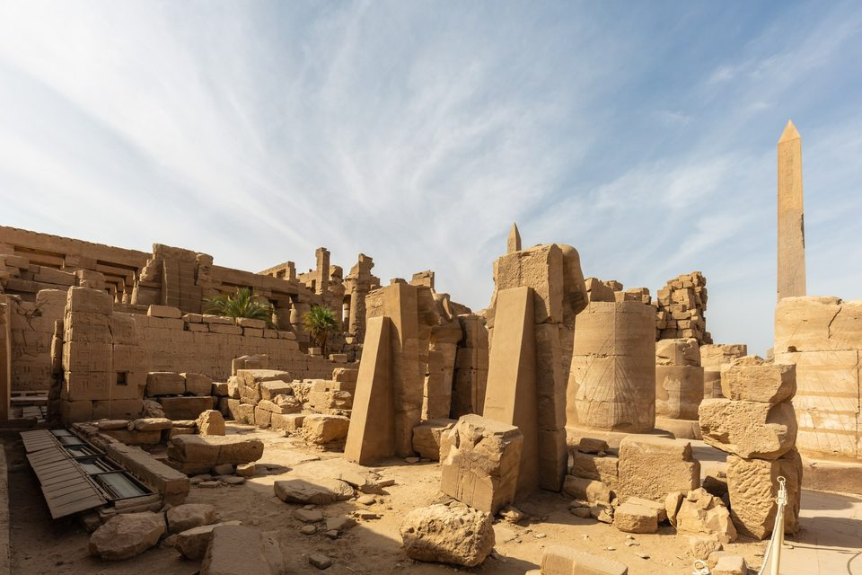

Egypt · Luxor
Karnak: Precinct of Amun-Ra audio guide
15 stops · 20 min
Billed in ZAR
Unlocks in this browser after payment.
Pylons, columns and obelisks at Egypt's greatest temple. Listen here, or get the Earwise app to play as you walk.
Stops
- 1
The Ram-headed Sphinxes and the First Pylon
At the First Pylon, the huge unfinished gateway at the western entrance of the Amun precinct, at the end of the avenue lined with ram-headed sphinxes. This is stop 1 on the route.
Play0:00 / –:––Read along
You are facing the front door of the Great Temple of Amun. In ancient times the complex was called Ipet-isut, which translates roughly as the most select of places. It belonged to Amun, the chief deity of Thebes, and pharaohs kept enlarging it across some two thousand years.
Look at the gateway ahead. This is a pylon, a pair of massive towers with a doorway between them. The First Pylon is about 113 metres wide and about 15 metres thick. It was built late, under King Nectanebo the First, one of the last native Egyptian rulers. It was never finished. On the inside you can see ramps of mud brick, left where the builders abandoned them.
Now look down at the avenue in front of you. The sphinxes here have the bodies of lions and the heads of rams. Amun was linked with the ram, so these are the god's own animal, standing guard along the approach. A processional way lined with sphinxes once joined Karnak to Luxor Temple, about two point seven kilometres to the south. Once a year, at the Opet Festival, the statues of Amun, his wife Mut and their son Khonsu travelled that way.
The whole temple is arranged on two lines. The main line runs east to west. As in most Egyptian temples, it mirrors the path of the sun across the sky. A second line runs north to south, and points towards Luxor Temple. You are standing at the start of the first of those lines, and everything ahead of you was built along it.
- 2
The Great Court and the Kiosk of Taharqa
In the First Court, the open courtyard just inside the First Pylon, beside the single tall papyrus column of the Kiosk of Taharqa. This is stop 2 on the route.
Script and audio included when you buy - 3
The Shrines of Seti II and Ramesses III
In the north corner of the First Court, behind the northern flank of the First Pylon, at the small three-chapel shrine of Seti II. The temple of Ramesses III is on the south side of the court. This is stop 3 on the route.
Script and audio included when you buy - 4
The Bubastite Portal
On the south side of the First Court, by the gate between the temple of Ramesses III and the Second Pylon, looking at the carved reliefs of King Shoshenq I. This is stop 4 on the route.
Script and audio included when you buy - 5
The Second Pylon and the Colossus of Ramesses II
At the Second Pylon, the great gateway at the east end of the court, beside the standing colossus of Ramesses II at the doorway into the Hypostyle Hall. This is stop 5 on the route.
Script and audio included when you buy - 6
The Great Hypostyle Hall: the forest of columns
Inside the Great Hypostyle Hall, standing among the central row of tall columns just inside the Second Pylon. This is stop 6 on the route.
Script and audio included when you buy - 7
The reliefs of Seti I and Ramesses II, and the collapse of 1899
Beside a column on the north side of the Great Hypostyle Hall, where you can compare the fine raised relief of Seti I with the deeper sunk relief of Ramesses II. This is stop 7 on the route.
Script and audio included when you buy - 8
The outer walls and the Hittite treaty
Outside the Great Hypostyle Hall on its south side, at the wall that carries the battle scenes of Ramesses II and the text of his treaty with the Hittites. This is stop 8 on the route.
Script and audio included when you buy - 9
The Obelisks of Thutmose I and Hatshepsut
In the open area east of the Hypostyle Hall, at the tall pink granite obelisk of Hatshepsut, with the shorter obelisk of Thutmose I standing nearby. This is stop 9 on the route.
Script and audio included when you buy - 10
The Sanctuary of Philip Arrhidaeus
In the red granite sanctuary at the heart of the Temple of Amun, past the obelisks, the innermost shrine of the main temple. This is stop 10 on the route.
Script and audio included when you buy - 11
The Akh-menu and the Botanical Garden of Thutmose III
At the eastern end of the temple, in front of the Festival Hall of Thutmose III, known as the Akh-menu. This is stop 11 on the route.
Script and audio included when you buy - 12
The Sacred Lake and the giant Scarab
At the edge of the Sacred Lake, the large rectangular pool south of the temple's main axis, near the giant granite scarab beetle. This is stop 12 on the route.
Script and audio included when you buy - 13
The Cachette Court and the Merneptah Inscription
In the Cachette Court, the courtyard before the Seventh Pylon, south of the temple's heart. Access to this part of the site varies; listen from wherever you are allowed. This is stop 13 on the route.
Script and audio included when you buy - 14
The Temple of Khonsu
At the Temple of Khonsu, in the south-west corner of the Amun precinct, reached through the gateway of Ptolemy III at the end of the avenue of sphinxes. This is stop 14 on the route.
Script and audio included when you buy - 15
The Open Air Museum: the White Chapel and the Red Chapel
In the Open Air Museum, in the north-west corner of the precinct, in front of the White Chapel. The museum is included in the foreigner ticket; check the official site for its opening hours. This is stop 15 on the route.
Script and audio included when you buy
On the map
All 15 stop pins for this guide are marked. Open map